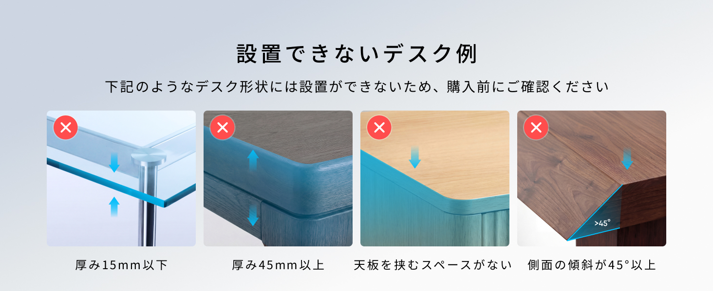

在宅ワークのデスク周りで地味に困っていたのが、電源タップの置き場所だった。床に転がしておくと足に引っかかるし、机の上に置くと作業スペースを圧迫する。かといって配線をきれいにまとめる余裕もなく、なんとなくケーブルが絡まったまま放置していた。
そんな状態を変えたくて導入したのが、このAnker Nano Power Strip A9196だ。使い始めて3か月ほど経つので、実際の使い勝手をまとめておきたい。
Anker Nano Power Strip A9196とは
机の縁にクランプで固定できる、AC6口・USB-C2ポート・USB-A2ポートを備えた10-in-1の電源タップだ。上段のACタップ部分と下段のクランプ部分が分離できる2ピース構造になっていて、上段だけを外して手元に持ってきたり、下段の土台部分だけを別の場所に固定したりと、設置の自由度が高い。最大70W出力に対応し、ケーブル長は約1.5m。
本体はマットな質感のブラックで、Ankerらしい主張しすぎないデザイン。クランプの締め付けはダイヤル式で、工具を使わずに手で調整できるのも扱いやすいポイントだった。
主要スペック
| 型番 | A9196 |
|---|---|
| 構成 | 10-in-1（AC差込口6口／USB-C 2ポート／USB-A 2ポート） |
| 最大出力 | 70W |
| 設置方式 | クランプ式（机の縁などに固定、ダイヤルで締め付け調整） |
| ケーブル長 | 約1.5m |
| カラー | ブラック |
| 主な使用シーン | 在宅ワークのデスク、リビングのテーブル、キッチンカウンターなど |
上段のタップ部分は下段のクランプ土台からワンタッチで着脱できる構造になっている。取り外して手元に持ってきてケーブルを挿し替える、といった使い方ができるのは、机の下や見えにくい位置に固定していると特にありがたいと感じた。

45度以上の傾斜があるデスクの縁に加え、ガラス製／厚さが15mm未満もしくは45mmを超える天板のデスクには使用できないので注意したい。
使ってわかった、3つの本音
1. 机の縁に固定できるだけで配線のストレスが減る
クランプで天板の縁に留めてしまえば、電源タップ自体が机の上のスペースを取らない。ケーブル類が足元でごちゃつくこともなくなり、デスク周りがすっきりした。個人的には、見た目以上に「毎回引っかからずに済む」という日々の小さなストレス軽減が大きかった。
2. USB-CとUSB-Aが両方あるので変換の手間がない
ノートPCの充電はUSB-C、周辺機器の充電はUSB-Aと、まだ両方を使う場面が多い。この電源タップならACタップと合わせて一台で完結するので、別途USB充電器を用意する必要がなくなった。70W出力なので、ノートPCの充電にもある程度対応できる点は助かる。
3. 上下分離構造は慣れるまで少しコツがいる
上段と下段が分離できるのは便利な反面、最初は着脱の感覚がつかめず、しっかりハマっているか不安になる場面があった。数回使えばコツはつかめるが、初回はカチッと固定される感触を確認しながら扱うのがいいと思う。
- クランプ式で机の縁に固定でき、デスク上のスペースを圧迫しない。
床置きやコンセント直挿しと違い、ケーブル類が足元でごちゃつかず配線がすっきりした。 - AC6口・USB-C2ポート・USB-A2ポートの10-in-1で一台に集約できる。
別途USB充電器を用意する必要がなく、デスク周りの機器をまとめて接続できる。 - 上段のタップ部分だけを取り外して手元で使える。
固定位置が見えにくい場所でも、ケーブルの挿し替えがしやすい。 - ダイヤル式クランプで工具不要。
天板の厚みに合わせて手で締め付け調整でき、設置がすぐに終わる。
正直に書く、気になる点
- 上下分離の着脱に最初は慣れがいる。
固定される感触がわかりにくく、初回はしっかりハマっているか確認しながら扱う必要がある。 - デスクの形状によってはクランプで設置できない。
天板の厚みが15mm未満・45mmを超えるデスク、ガラス製の天板、側面の傾斜が45度以上あるデスクの縁には設置できない。購入前に自分のデスクの厚みと形状を必ず確認しておきたい。 - 70W出力のため、複数のノートPCを同時に高出力で充電する用途には向かない。
スマホやタブレット、周辺機器の充電を中心とした使い方に向いていると感じた。
学生なら、まずはPrime Studentをチェック。
Prime Student（旧Amazon Student）を見てみる※学生確認の上、登録は無料です。詳細条件はPrime Studentのページでご確認ください。
こんな人に向いている
在宅ワークでデスク上の配線をすっきりさせたい人、机の上のスペースを電源タップに取られたくない人に向いている。ノートPCとスマホ、周辺機器をまとめて一台の電源タップで充電したい人にも合うと思う。逆に、複数台のノートPCを同時に高出力で急速充電したい人や、設置予定の天板が極端に厚い・薄いといった特殊な環境の場合は、対応範囲を事前に確認したほうがいい。
総評
Anker Nano Power Strip A9196は、電源タップの「置き場所」という地味だけれど毎日のストレスになりやすい部分を、クランプ固定という発想で解決してくれる製品だ。AC・USB-C・USB-Aを一台に集約できる点も含めて、在宅ワークのデスク環境を整えたい人には実用性の高い一台だと、3か月使ってみて感じている。
9,990円前後という価格を考えると、デスク周りの配線に日常的にストレスを感じている人にとっては、検討する価値のある投資だと思う。